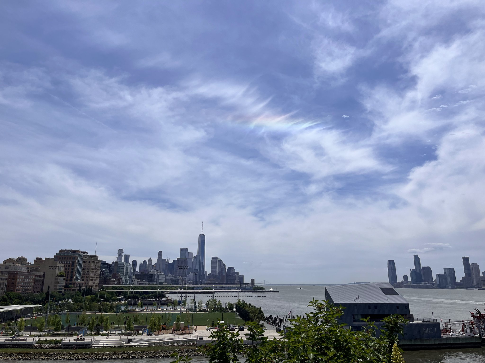

Travel Diaries Introduction
Entries are grouped loosely by region, with photos from each trip. My goal is to one day travel to Europe and South America, so stay tuned for more updates as I explore new places!
Asia tokyo • korea • taipei

Tokyo, Japan
I loved visiting Tokyo; my family made a pit stop on the way to Taiwan to visit family this past summer. Everywhere you wander the city, there's something to do for everyone; from corner stores, beautiful scenery and gardens, delicious restaurants and cafes, bustling markets, and quiet temples.
Tokyo, Japan · Summer 2025
View photo set →

Seoul, Korea
From visiting the city's historical palaces, tasting street food at stalls, to shopping at busy streets, Seoul was a sensory experience. I explored palaces, hiked up mountains, and wandered through neighborhoods full of colorful murals and trendy cafes.
Seoul, Korea · Summer 2024
View photo set →

Taipei, Taiwan
Taipei will always be my second home. Most of my extended family still lives here, and my childhood summer memories are rooted in visiting Taipei every other summer and spending time with my cousins, grandparents, aunties, and uncles. Every inch of the city holds a bit of nostalgic charm for me, from night markets to temples to the city alleys.
Taipei, Taiwan · various summers
View photo set→
United States los angeles • new york city

Los Angeles, USA
Going to college in California at USC has given me the chance to explore LA and the West Coast more. From beach days at Santa Monica to hikes in Griffith Park, I've been immersing myself in the sunny vibes and diverse, rich culture of the city.
Los Angeles, USA · 2024 - now
View photo set →

New York City, USA
Raised in New Jersey, I live around an hour away from New York City. My family would often visit the city during long breaks and weekends.
New York City, USA · various years
View photo set →